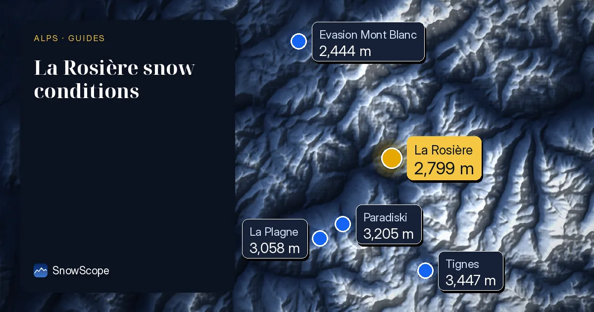

La Rosière snow conditions: 24 cm at the top, 108 cm forecast this week (12 November 2026)
La Rosière sits high on the France–Italy border, its upper slopes still holding 24 cm from November's early arrivals. The coming week brings a major shift: the forecast shows 108 cm building at the top (2799 m) and 61 cm at mid-mountain (1995 m), though the village base remains in the shadow of its own south-facing aspect.
See the live snow forecast for La Rosière in the SnowScope appSnow depth, powder alerts and the 3D map, free.

What you see now on 11 November
The top of La Rosière carries 24 cm, gained mostly in the past week—7 cm fell in the last 48 hours alone. Mid-mountain has nothing measurable today despite picking up 9 cm over the same seven days; the sun and the ground have eaten the thin early snow at that lower height. The village sits bare.
On actual slopes, a north-facing gully will hold more than a sunny piste by the full depth shown here, and early-season snow is thin enough that rocks may show through.
Seven days of snow ahead
Over the full seven days, 108 cm is expected at the top, 61 cm at mid-mountain and 4 cm in the village. The first two days are the most reliable part of this forecast; beyond that, the direction matters more than the exact total.
La Thuile, La Rosière's Italian partner across the Petit-Saint-Bernard pass, usually sits in the same weather system and will see similar accumulation.
November snow in past winters
Over 46 winters the first snow reaches the top by 28 September, mid-mountain by 12 October and the village by 22 October. A typical November leaves 51 cm at the top, 21 cm at mid-mountain and 11 cm in the village. Today's cover is below average everywhere, but the forecast would flip that by next week.
The pattern usually deepens through winter: December typically adds 119 cm at the top and 64 cm at mid-mountain. February becomes the deepest month in the village (94 cm average), while March and April peak higher up (153 cm and 246 cm at mid-mountain and top respectively).

Why the village base holds better than you'd expect
For a south-facing resort at 1192 m, La Rosière's village snow is surprisingly durable. In most winters (9 of 10), there are seven separate weeks when 50 cm or more lies there. Week 9, around late February, reaches 101 cm in a typical winter. The median peaks across all 46 winters are 117 cm in the village, 182 cm at mid-mountain and 306 cm at the top. Last winter came close: 140, 203 and 295 cm respectively.
The mapped terrain spans 68 km of runs and 29 lifts between 1192 m and 2799 m, sharing the domain with La Thuile across the border.
Reading this forecast
A seven-day total of 108 cm at the top is a large number and carries uncertainty. The first 48 hours—around 37 cm at the top—are the most reliable to plan on. Beyond that, wind will redistribute snow, especially on the high ridges, moving it into the gullies where it accumulates faster.
Early-season snow is different from deep winter snow: the ground underneath is warmer and may still settle or melt slightly; rocks can break the surface; and early flakes are often light and low-density. Plan for the storm, but do not assume every centimetre stays where it falls.
Tips for skiers
- Treat the first 48 hours of the forecast (around 20 cm at the top) as your planning anchor. The full 108 cm is possible but less certain.
- The village will likely stay bare or nearly bare this week—head to mid-mountain or higher to find the new snow.
- Before any off-piste descent, check the Météo-France avalanche bulletin: 100 cm of new snow in a week creates serious instability.
- Wind on the high ridges will move new snow into gullies and leeward slopes; seek shaded terrain if rocks are still showing through early cover.
- La Rosière's calendar controls when lifts open; the SnowScope map shows snow depth, not operational status.
About these numbers
Resort snow depths are the deepest snow on the resort's upper slopes on the date shown; they are estimates for an area, not a measurement at one point. Forecasts can change. Always read the official avalanche bulletin before going off-piste.
Official avalanche bulletins: Météo-France – Bulletin d'estimation du risque d'avalanche
Cite this report
For research, teaching or the press: the numbers and charts are free to reuse under CC BY 4.0 with this citation.
SnowScope (2026), La Rosière snow conditions: 24 cm at the top, 108 cm forecast this week (12 November 2026), https://snowscope.app/blog/en/2026/11/la-rosiere-snow-conditions-12-november-2026.html, accessed 2026-11-12
SnowScope (Atlas Labs). (2026, November 12). La Rosière snow conditions: 24 cm at the top, 108 cm forecast this week (12 November 2026). SnowScope snow reports. https://snowscope.app/blog/en/2026/11/la-rosiere-snow-conditions-12-november-2026.html
BibTeX
@misc{snowscope2026larosieresnowconditions1,
author = {{SnowScope (Atlas Labs)}},
title = {La Rosière snow conditions: 24 cm at the top, 108 cm forecast this week (12 November 2026)},
year = {2026},
month = nov,
howpublished = {\url{https://snowscope.app/blog/en/2026/11/la-rosiere-snow-conditions-12-november-2026.html}},
note = {Published 2026-11-12 09:53 UTC; accessed 2026-11-12}
}· CC BY 4.0 · Methods, data and tools →
La Rosière: snow and temperature by height, this winter vs last (tools) →
Follow La Rosière
Free: a message when fresh snow is coming, and the forecast every morning.
More snow reports

50 cm on the upper slopes: that is why La Grave heads our list. We combined today's snow depth, the new snow of the last 72 hours and the forecast to …

Saas Fee sits at 1,780 m in a car-free village. Reach it by train to Visp then PostBus 511, or drive via Lötschberg, Furka, Simplon or the Rhône valley. Data from 2026-11-08.

Our 46-winter Alps record at 108 points from 667 to 3,872 m: snow days down at all of them, clearly at 81 %. What changed at each height, and why.